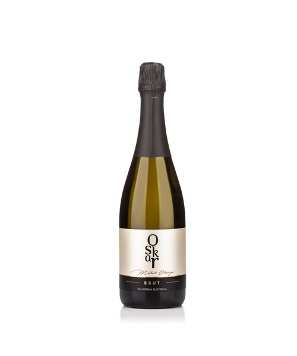
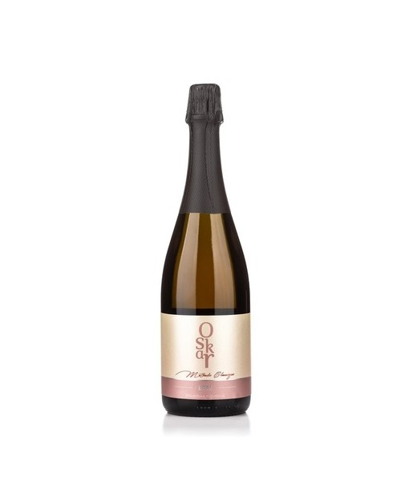
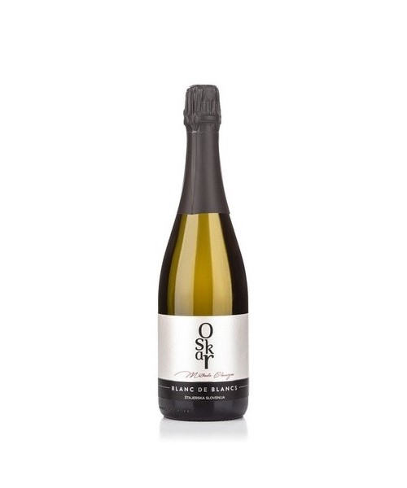
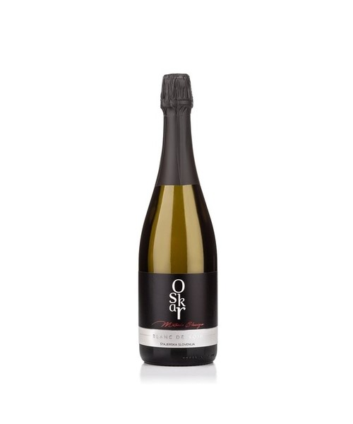

Peneča vina
Eleganca klasične metode
Peneča vina Vina Oskar nastajajo po tradicionalni klasični metodi z večletnim zorenjem na kvasovkah v hladu naše kleti. Zaznamujejo jih fini, obstojni mehurčki, kremasta tekstura ter prefinjenost, primerna za posebne življenjske trenutke in kulinarična doživetja.

Brut
Bogato in krepko vino z izraženo zorilno noto, ki se lepo prepleta s tipično štajersko svežino in živahnim karakterjem. Uravnotežen okus ter prijeten pookus zaokrožita njegovo eleganco.
16,90€ Naroči
Rosé Brut
Preprosta, sveža in sadna penina, ki navdušuje s svojo lahkotnostjo in suhim, prijetnim značajem. Nezahtevna in pitka, idealna za vsakodnevne trenutke in prijetno druženje.
16,90€ Naroči
Blanc De Blancs
Chardonnay izraža popolno eleganco v kombinaciji s krepko kislino in prijetno svežino. Odlikuje ga uravnotežen okus, ki se lepo povezuje z izrazitimi aromami in dolgim, suhim pookusom.
19,70€ Naroči
Blanc De Noir
Modri pinot navdušuje s tipičnim šampanskim profilom, prefinjenimi aromami in izredno bogatim suhim zaključkom.
19,70€ NaročiMinister za zdravje opozarja: Prekomerno pitje alkohola škoduje zdravju!